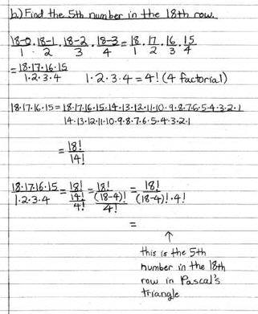

Grace's work on Pascal's triangle and the binomial expansion
August 8, 2002 Email from Grace to Don: Hi Don, I did some exercises in your book in Chapter 9. Attached please find my work. Also, the U of Chicago program ended two weeks ago. Bye, Grace

Don’s email to Grace Aug. 8, 2002 Hi Grace!
Great work on chapter 9, Pascal's triangle and finding the
numbers in those rows!
5 things:
1. Write what number 15!/((15-9)!*9!) is equal to; and the
next one, the 5th # in the 18th row.
2. Write the generalization to find the r th number in the
n th row.
3. By the way, did you actually find (a+b)^3 by
multiplying (a+b)*(a+b)*(a+b) ?
4. Can you write out (a+b)^8 without looking?
5. Write out the first 5 terms of the expansion of (a+b)^n
OK?
It's a pleasure to work with you. Thank you.
Grace's 2nd email to Don Aug. 8, 2002 Hi Don,
15!/((15-9)!*9!) is equal to 5005 and 18!/((18-4)!*4!) is
equal to 3060.
I think the generalization to find the r th number in the n
th row is:
Attached is how I found (a+b)^3, (a+b)^8, and (a+b)^10.
I also attached some work in Chapter 8. I did it a month
ago but I never sent it.
Bye,
See Grace's work on area under curves-> the integral.
See Grace's work on multiplying two infinite series!!
See Grace's ideas about teaching!